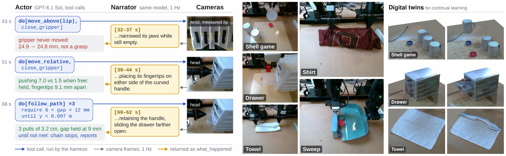
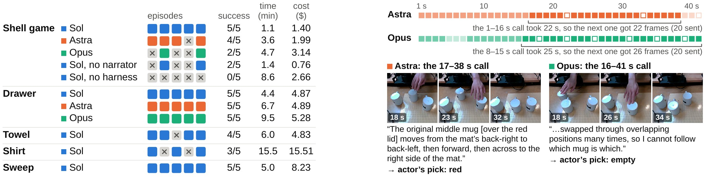
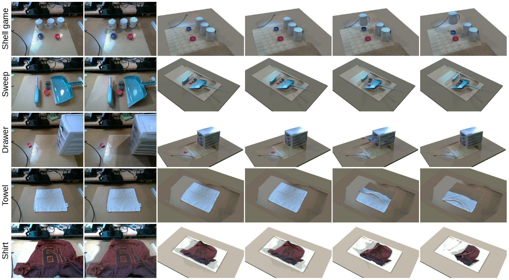

Shell game
An operator shuffles three mugs for 20–30 s; the first mug lifted must be the one covering the red object.
Sol 5/5 · Astra 4/5 · Opus 2/5
Frontier Multimodal Models Driving Real Robot Arms on Long-Horizon Tasks, Zero-Shot
Frontier models such as GPT-6.1 Sol, GPT-6 Astra and Claude Opus 5.5 can now plan and call tools, yet they still struggle to drive real robots through long-horizon, contact-rich manipulation, blind while the arm moves and while they think. We present Reins, a harness in which an off-the-shelf model operates a dual-arm robot with 3D perception tools and atomic actions that report contact and grip. The model chains actions in one call, each with a condition that must hold, stopping at the first that fails; a second instance, the narrator, watches the cameras continuously and reports what changed with every result. From images, Reins also builds a simulation-ready twin of the scene for continual policy learning. With natural-language prompts and no task-specific code, GPT-6.1 Sol succeeds in 88% of real episodes on five tasks; without the harness, it fails every shell game, taking 8 times as long. Three frontier models perform alike but differ in tracking a scene that changes while the actor thinks. Code will be released upon publication.
Two 6-DoF AirBot Play arms with stock parallel grippers, RGB-D cameras on the head and on each wrist. Every episode starts from the zero pose and the operator judges success. Sol, Astra and Opus are GPT-6.1 Sol, GPT-6 Astra and Claude Opus 5.5.
Success counts are from the paper, five episodes per model.
An operator shuffles three mugs for 20–30 s; the first mug lifted must be the one covering the red object.
Sol 5/5 · Astra 4/5 · Opus 2/5
Open a drawer by its 3–4 mm lip, put a block in, and close it.
Sol 5/5 · Astra 5/5 · Opus 5/5
Two arms tuck in the sleeves, then fold the shirt twice.
Sol 3/5
Fold a towel twice.
Sol 4/5
One arm holds a dustpan; the other brushes the objects into it.
Sol 5/5
These tasks are not part of the paper's evaluation.
Pull the monkey pendant down to switch on the lamp.
Stack bricks into a three-level pyramid.
Erase the writing on a whiteboard.
Clips from our demo video play at 5× and skip some stretches of waiting.
An off-the-shelf model, the actor, drives both arms through eighteen tools: perception tools that turn an object name or an image point into a 3D point (SAM 3 on RGB-D, to about 1.6 mm with the wrist camera), atomic actions that report contact and grip, and a task ledger. There is no skill library and no task code; task knowledge enters only through a natural-language prompt.
Guarded chains. Thinking takes time: model latency is 41–78% of an episode, so each decision should cover several checked steps. With do, the actor chains up to eight tool calls in one decision and attaches to each a condition that must hold and an optional repeat condition. The chain stops at the first run that fails its check.
The narrator. The actor is blind while it thinks. A second instance of the same model watches the head camera at 1 frame/s, and its account of what changed arrives with the next tool result as what_happened. Each window lasts as long as the previous narrator call, so a faster narrator sees a moving scene in more, shorter windows.


wait, look), it wins none and takes 8 times as long.From one calibrated head-camera RGB frame, Reins can rebuild the scene in MuJoCo. Each object is a parametric model of its category, fitted to its SAM mask through the calibrated camera, with appearance from inverse rendering and mass and inertia from its closed mesh. A gate checks every movable body before it counts as ready for simulation: 11 of the 14 objects in the five scenes pass, and in every twin a scripted task runs to completion. This tool was not used in the real-robot episodes.

@misc{ye2026reins,
title = {Reins: Frontier Multimodal Models Driving Real Robot Arms
on Long-Horizon Tasks, Zero-Shot},
author = {Ye, Pengfei and Dou, Zhiyang and Ma, Yuxiang and
Chen, Haonan and Yang, Heng and Adelson, Edward H.},
year = {2026},
note = {Extended abstract}
}